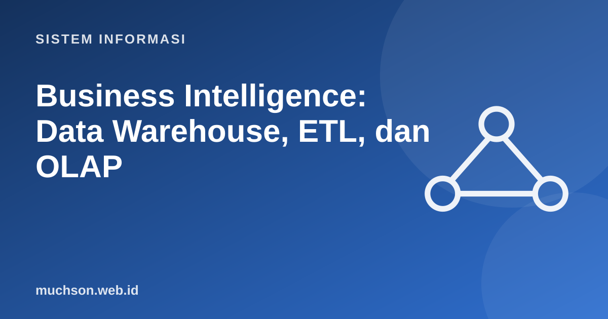

Beranda › Artikel › Sistem Informasi
Sistem InformasiBusiness Intelligence: Data Warehouse, ETL, dan OLAP
Basis data operasional dirancang untuk mencatat transaksi dengan cepat, bukan untuk menjawab pertanyaan seperti "bagaimana tren penjualan per wilayah selama tiga tahun?". Business intelligence (BI) memakai gudang data dan model khusus agar pertanyaan analitik dijawab cepat dan konsisten.
Sebaiknya sudah paham: SQL dasar, jenis-jenis SI

Tujuan belajar
Setelah membaca dan mencoba materi ini, Anda mampu:
- membedakan OLTP dan OLAP
- menjelaskan gudang data dan bagaimana data mengalir lewat ETL
- membuat star schema dengan tabel fakta dan dimensi
- melakukan operasi OLAP: slice, dice, roll-up, drill-down
- menjelaskan dasbor dan KPI yang baik
OLTP vs OLAP
| Aspek | OLTP (operasional) | OLAP (analitik) |
|---|---|---|
| Tujuan | Mencatat transaksi harian | Menganalisis tren dan pola |
| Operasi | Banyak INSERT/UPDATE kecil | Kueri besar yang membaca banyak baris |
| Desain | Ternormalisasi (3NF) | Berdimensi (star schema), sengaja denormalisasi |
| Data | Terkini | Historis, terintegrasi dari banyak sumber |
| Pengguna | Staf operasional | Manajer, analis |
Arsitektur data warehouse
| Tahap ETL | Pekerjaan | Contoh |
|---|---|---|
| Extract | Mengambil data dari sumber | Menarik transaksi kemarin dari basis data kasir |
| Transform | Membersihkan, menyeragamkan, menghitung | Menyeragamkan "Jkt"/"Jakarta"; membuang duplikat; menghitung margin |
| Load | Memuat ke gudang data | Menambah baris fakta dan memperbarui dimensi |
Realita
Sekitar sebagian besar usaha proyek BI dihabiskan untuk kualitas dan integrasi data, bukan untuk grafik. Dasbor secantik apa pun menyesatkan bila data dasarnya tidak konsisten.
Star schema
import sqlite3
db = sqlite3.connect(":memory:")
db.executescript("""
CREATE TABLE dim_waktu (id_waktu INTEGER PRIMARY KEY, tanggal TEXT, bulan TEXT, tahun INTEGER);
CREATE TABLE dim_produk (id_produk INTEGER PRIMARY KEY, nama TEXT, kategori TEXT);
CREATE TABLE dim_toko (id_toko INTEGER PRIMARY KEY, kota TEXT);
CREATE TABLE fakta_penjualan (id_waktu INT, id_produk INT, id_toko INT, jumlah INT, pendapatan INT);
INSERT INTO dim_waktu VALUES (1,'2025-01-15','Jan',2025),(2,'2025-02-10','Feb',2025),(3,'2026-01-20','Jan',2026),(4,'2026-02-18','Feb',2026);
INSERT INTO dim_produk VALUES (1,'Kopi','Minuman'),(2,'Teh','Minuman'),(3,'Roti','Makanan');
INSERT INTO dim_toko VALUES (1,'Madiun'),(2,'Surabaya');
INSERT INTO fakta_penjualan VALUES
(1,1,1,100,2000000),(1,3,1,50,600000),(2,2,2,80,1200000),(2,1,2,120,2400000),
(3,1,1,140,2800000),(3,3,2,70,840000),(4,2,1,90,1350000),(4,1,2,160,3200000);
""")
def q(sql):
print(">", " ".join(sql.split()))
for r in db.execute(sql): print(" ", r)
# roll-up: pendapatan per tahun
q("SELECT w.tahun, SUM(f.pendapatan) FROM fakta_penjualan f JOIN dim_waktu w USING(id_waktu) GROUP BY w.tahun")
# drill-down: per tahun dan kategori
q("""SELECT w.tahun, p.kategori, SUM(f.pendapatan) FROM fakta_penjualan f
JOIN dim_waktu w USING(id_waktu) JOIN dim_produk p USING(id_produk) GROUP BY w.tahun, p.kategori""")
# slice: hanya Surabaya
q("""SELECT p.nama, SUM(f.jumlah) FROM fakta_penjualan f JOIN dim_produk p USING(id_produk)
JOIN dim_toko t USING(id_toko) WHERE t.kota = 'Surabaya' GROUP BY p.nama ORDER BY 2 DESC""")> SELECT w.tahun, SUM(f.pendapatan) FROM fakta_penjualan f JOIN dim_waktu w USING(id_waktu) GROUP BY w.tahun
(2025, 6200000)
(2026, 8190000)
> SELECT w.tahun, p.kategori, SUM(f.pendapatan) FROM fakta_penjualan f JOIN dim_waktu w USING(id_waktu) JOIN dim_produk p USING(id_produk) GROUP BY w.tahun, p.kategori
(2025, 'Makanan', 600000)
(2025, 'Minuman', 5600000)
(2026, 'Makanan', 840000)
(2026, 'Minuman', 7350000)
> SELECT p.nama, SUM(f.jumlah) FROM fakta_penjualan f JOIN dim_produk p USING(id_produk) JOIN dim_toko t USING(id_toko) WHERE t.kota = 'Surabaya' GROUP BY p.nama ORDER BY 2 DESC
('Kopi', 280)
('Teh', 80)
('Roti', 70)
Dasbor dan KPI yang baik
- Mulailah dari pertanyaan keputusan, bukan dari data yang tersedia.
- Pilih sedikit KPI yang dapat ditindaklanjuti; hindari "metrik kesombongan" yang naik terus tetapi tidak mengubah keputusan.
- Tampilkan konteks: bandingkan dengan target, periode sebelumnya, atau tolok ukur.
- Gunakan grafik yang tepat (garis untuk tren, batang untuk perbandingan) dan hindari hiasan.
- Definisikan setiap metrik di satu tempat ("laba" berarti apa?) agar semua orang membaca angka yang sama.
Latihan mandiriCoba kerjakan dulu sebelum membuka jawaban.
1. Rancang star schema untuk analisis absensi karyawan.
Fakta: absensi (jumlah_hari_hadir, jam_lembur); dimensi: karyawan, waktu, unit kerja.
2. Mengapa gudang data didenormalisasi sedangkan OLTP dinormalisasi?
OLTP mengutamakan konsistensi tulis; gudang mengutamakan kecepatan baca analitik dan kesederhanaan JOIN.
3. Beri contoh masalah kualitas data yang harus ditangani pada Transform.
Format tanggal berbeda, duplikat pelanggan, nilai kosong, satuan berbeda.
4. Apa itu data lake dibanding data warehouse?
Data lake menyimpan data mentah dalam berbagai format dengan skema dibaca saat dipakai; warehouse menyimpan data terstruktur yang sudah dimodelkan.
Ringkasan
- OLTP untuk transaksi, OLAP untuk analisis.
- ETL memindahkan data dari sumber ke gudang data dan membersihkannya.
- Star schema: tabel fakta dikelilingi tabel dimensi.
- OLAP: roll-up, drill-down, slice, dice, pivot.
- Dasbor yang baik menjawab pertanyaan keputusan dengan KPI yang jelas.
Tanya jawab
Apa alat BI yang populer?
Power BI, Tableau, Looker Studio, Metabase (sumber terbuka), dan Apache Superset.
Apa itu data mart?
Subset gudang data untuk satu unit atau subjek, misalnya pemasaran.
Apa hubungan BI dengan machine learning?
BI menjelaskan apa yang terjadi (deskriptif); ML dapat memprediksi apa yang akan terjadi, sering memakai data dari gudang yang sama.
Referensi
- Ralph Kimball dan Margy Ross, The Data Warehouse Toolkit (Wiley, edisi ke-3)
- Inmon, Building the Data Warehouse (Wiley)
- Metabase: Learn (BI sumber terbuka)
- Kenneth C. Laudon dan Jane P. Laudon, Management Information Systems: Managing the Digital Firm (Pearson)